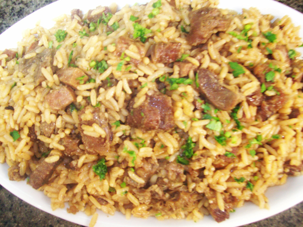

Arroz Carreteiro
Autor: Silvia Martins

Tempo de Preparação: 1 hora
Rendimento: 10 porções
Informação Nutricional:
350 kcal,
40 g
Ingredientes:
-
1 kg de carne seca
-
1 cebola picada
-
1 colher de sopa de cheiro-verde
-
2 xícaras de chá de arroz
-
2 dentes de alho picados
-
6 colheres de sopa de azeite
Modo de Preparo:
Deixe a carne seca de molho de vépera, troque a água e cozinhe até ficar macia
Desfie
Frite-a em uma panela com azeite
Quando a carne estiver dourada, coloque a cebola e o alho
Junte o arroz e frite
Acrescente a água fervente e cozinhe em fogo baixo até o arroz ficar macio
Salpique o cheiro-verde e sirva em seguida
Bom apetite
88 pessoas avaliaram essa receita
...